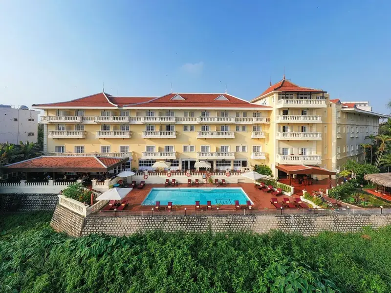
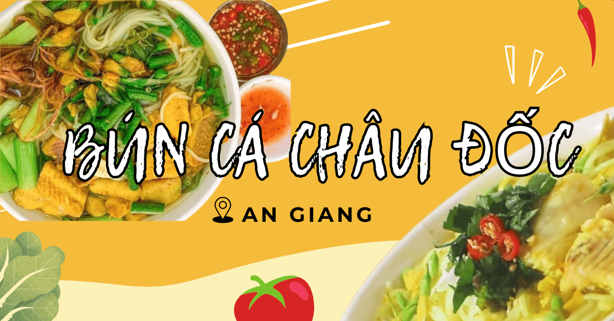
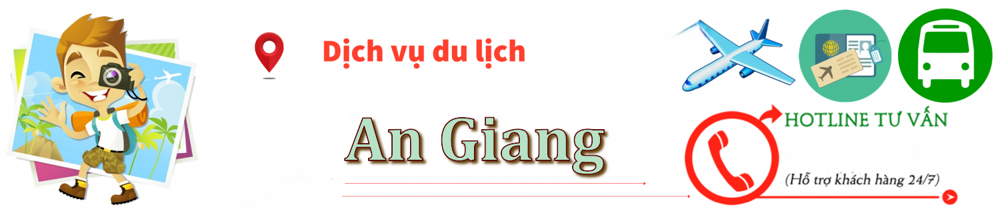

Du Lịch An Giang
Hướng dẫn & Tư vấn cho cộng đồng người Việt tại Fairfax
Thời Điểm
🌿 Tháng 8–11 Mùa nước nổi – ngắm lũ về, săn ảnh rừng tràm, cá linh, bông điên điển
🌾 Tháng 4 Lễ hội Vía Bà Chúa Xứ (23/4 âm lịch), rộn ràng nhất năm
☀️ Tháng 12 – tháng 3 Mùa khô – nắng đẹp, thích hợp leo núi, khám phá tâm linh
👉 Lý tưởng: đi vào mùa nước nổi (tháng 9–11) hoặc dịp lễ hội Vía Bà Chúa Xứ.
🌟 Điểm đến nổi bật ở An Giang
🏯 Miếu Bà Chúa Xứ núi Sam – Châu Đốc Nơi linh thiêng nhất miền Tây, hàng triệu người hành hương
🏔 Núi Cấm (Thiên Cấm Sơn) Cao nhất miền Tây, khí hậu mát mẻ như Đà Lạt thu nhỏ
🌾 Rừng Tràm Trà Sư Đi xuồng giữa rừng tràm xanh mướt, mùa nước nổi cực đẹp
🌈 Làng Chăm Châu Giang Cầu tre, thánh đường Hồi giáo, làng nghề dệt thổ cẩm độc đáo
🕌 Chùa Hang – Phật Cô Đơn – Núi Sam Quần thể di tích tâm linh đặc sắc
🐘 Núi Dài – Núi Sập – Núi Cô Tô Dành cho người mê trekking nhẹ

🛏️ Khách sạn & homestay
🏨 Khách sạn tại TP. Châu Đốc Victoria Châu Đốc Hotel (4⭐), Châu Phố Hotel (3⭐), Khách sạn Bến Đá Núi Sam
🏡 Homestay / nghỉ dưỡng Trà Sư Lodge, Núi Cấm Bungalow, Victoria Nui Sam Lodge (view thung lũng cực đẹp)

🍜 Ẩm thực An Giang
🍲 Bún cá Châu Đốc Đậm đà, nấu bằng cá lóc, nghệ, ngải bún
🍤 Gỏi sầu đâu – mắm thái Độc đáo miền Tây, chua chát béo bùi
🐟 Mắm cá linh, cá sặc Ăn với rau sống, bún, khô cá lóc
🍗 Cơm tấm Long Xuyên Hạt gạo nhỏ dẻo, ăn với sườn, trứng
🌮 Bánh xèo, bánh bò thốt nốt, bánh phồng Phú Mỹ Đặc sản địa phương ngon lạ
🧃 Thốt nốt (nước, bánh, đường) Đặc sản vùng Bảy Núi

Dịch vụ hỗ trợ
Là nơi bạn có thể liên hệ để được hỗ trợ, tư vấn, phản ánh hoặc giải quyết các vấn đề liên quan đến hoạt động du lịch khi đến An Giang.
☎️ Trung tâm hỗ trợ khách du lịch An Giang 📞 0296 3866 500
🚓 Công an tỉnh An Giang 113 – 114 – 115
🚑 Bệnh viện Đa khoa Trung tâm An Giang 0296 3841 775
🚌 Bến xe Long Xuyên – Châu Đốc 0296 3841 210
💡 lưu ý:
⛪ Tôn trọng nơi linh thiêng (Miếu Bà Chúa Xứ, chùa, thánh đường Chăm – Khmer).
🛶 Nếu đi rừng tràm nên mặc áo tay dài, mang kem chống muỗi.
🌡 Nên mang theo nước, mũ, kính vì thời tiết nắng gắt ở vùng núi.
🚙 Nên đặt xe từ TP.HCM – An Giang (xe Phương Trang, Huệ Nghĩa).